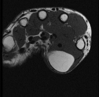

Ficha del catálogo
Lipoma de partes blandas
- Sistema
- Óseo
- Modalidad
- RM
- Región
- Partes blandas
- Dificultad
- Básico
Es el tumor benigno de partes blandas más frecuente y se presenta como una masa blanda, indolora y de crecimiento lento. Su composición es grasa madura, lo que le da una apariencia muy característica en todas las técnicas de imagen. El reto no es diagnosticarlo sino distinguirlo de un tumor lipomatoso maligno.
Técnica
Resonancia magnética con secuencias T1 y con supresión grasa, que confirman que la lesión sigue exactamente la señal de la grasa subcutánea.
Qué observar
- Señal idéntica a la grasa en todas las secuencias, con supresión completa
- Contornos bien definidos y ausencia de realce significativo tras contraste
- Ausencia o presencia mínima de septos internos, siempre finos
- Tamaño estable en el tiempo y localización habitualmente superficial
- Signos de alarma: Septos gruesos, nódulos sólidos, tamaño grande o localización profunda
- Ausencia de invasión de estructuras vecinas
Hallazgos
Masa de partes blandas homogénea con señal grasa pura, bien delimitada y sin componentes sólidos ni realce relevante.
Perlas
Los criterios que obligan a descartar un tumor lipomatoso maligno son el tamaño grande, la localización profunda, los septos gruesos y la presencia de nódulos que realzan. Un lipoma superficial pequeño y homogéneo no necesita seguimiento.
Diagnóstico diferencial
- Liposarcoma bien diferenciado
- Septos gruesos, componentes no grasos y localización profunda.
- Hibernoma
- Lesión grasa con realce marcado y vasos internos prominentes.
- Hernia grasa o lipoma herniado
- Continuidad con la grasa profunda a través de un defecto fascial.
Simuladores
- Necrosis grasa postraumática
- Angiolipoma
- Atrofia muscular con sustitución grasa
Por modalidad
- RM
- Caracteriza la grasa y detecta componentes sospechosos
- TC
- Mide densidad grasa negativa característica
- US
- Lesión ovalada isoecogénica o levemente hiperecogénica compresible
Protocolo
Resonancia con T1, secuencia con supresión grasa y series con contraste si se identifican componentes no grasos.
Clasificación
Errores frecuentes
- No emplear secuencias con supresión grasa para confirmar la naturaleza de la lesión
- Ignorar septos gruesos o nódulos que sugieren malignidad
- Asumir benignidad en lesiones grasas profundas de gran tamaño

lipoma partes blandas grasa supresion grasa tumor benigno liposarcoma